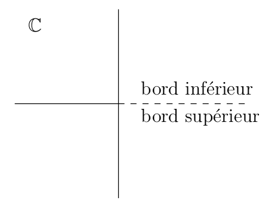
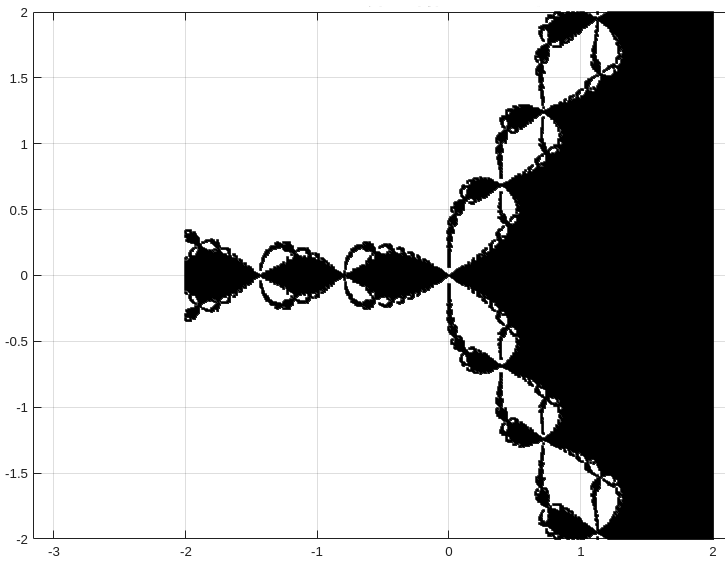
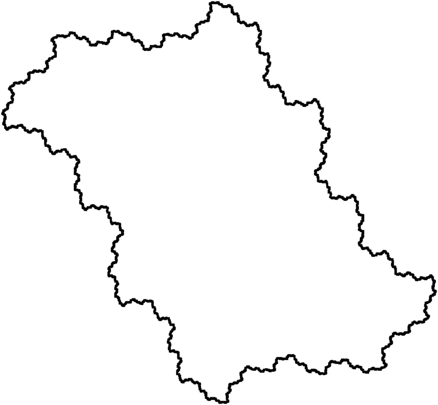
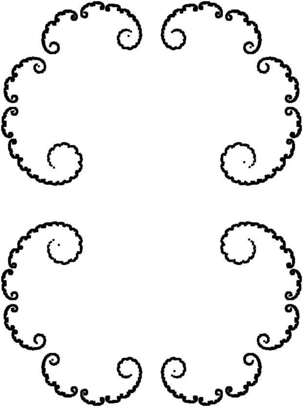
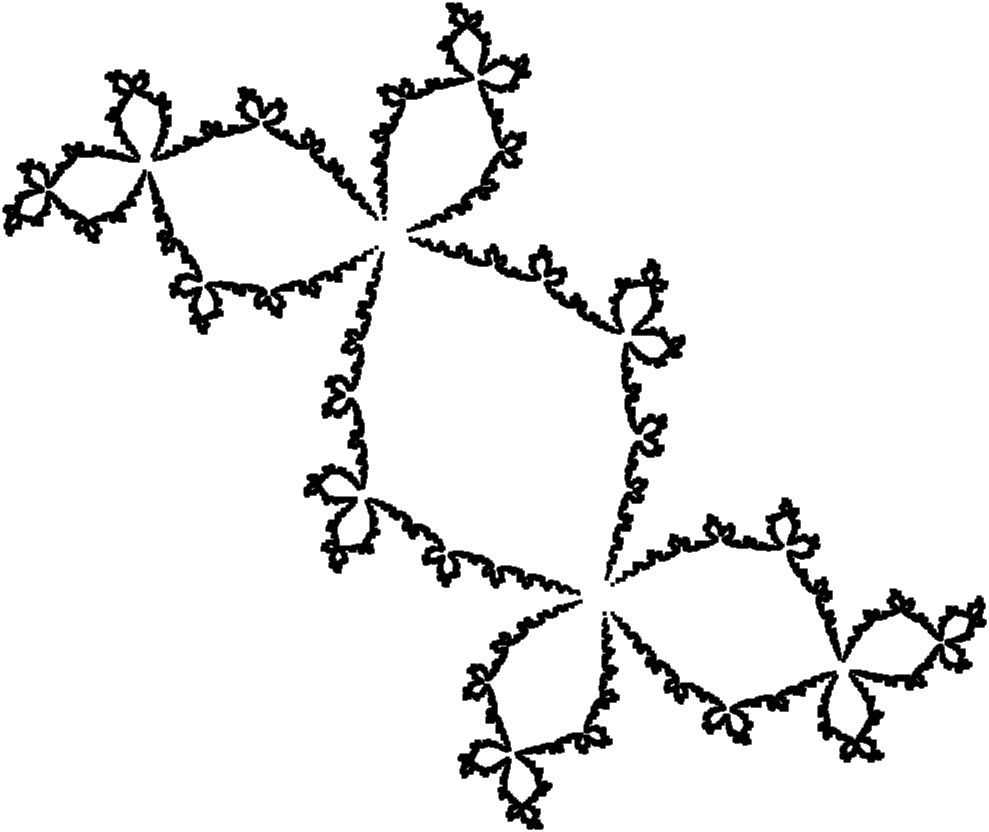
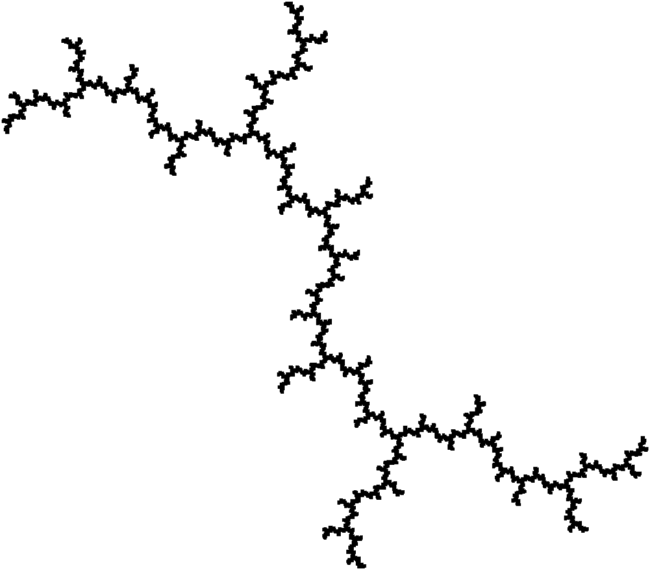

| Document précédent | Document suivant |
Dans un document précédent, on a présenté certaines des propriétés de la fonction logistique. Plus spécifiquement, on a étudié les itérations de la fonction à valeurs réelles f𝜇 définie par f𝜇(x) = 𝜇x(1-x) pour x ∈ [0,1] lorsque 𝜇 varie.
L'étape logique suivante est d'étudier les itérations de fonctions à valeurs complexes définie sur le plan complexe.
Certains lecteurs pourraient choisir d'ignorer les sections théoriques et plutôt choisir de lire seulement la section sur la où ils pourront générer les ensembles de Julia pour les fonctions polynomiales de degré deux.
Avertissement: Si les lecteurs espèrent trouver sur ce site Internet des applications pour produire des beaux ensembles de Julia en couleur, ils vont être déçus. Ce site Internet porte principalement sur la théorie qui se cache derrières les beaux ensembles de Julia. Les lecteurs peuvent utiliser Google pour trouver sur l'Internet beaucoup d'applications pour produire des beaux ensembles de Julia en couleur.
Les sections théoriques demandent une connaissance élémentaire de la topologie et de l'analyse complexe. Dans ce document, nous démontrons ou ébauchons la preuve de seulement certains des résultats que nous énonçons. Pour les démonstrations complètes de tous les résultats énoncés, le lecteur doit consulter les énumérées à la fin de ce document.
Dans ce document, une composante connexe d'un ensemble U est un sous-ensemble connexe V de U tel qu'il n'existe pas de sous-ensemble connexe W de U avec V ⫋ W.
Nous considérons les fonctions holomorphes R:ℂ → ℂ où ℂ est la sphère de Riemann (une variété complexe). À l'aide d'une projection stéréographique, nous pouvons définir une application conforme injective de ℂ sur ℂ ∪ {∞}, la compactification du plan complexe. Les fonctions holomorphes R:ℂ → ℂ sont alors les fonctions rationnalles R = P/Q où P et Q sont deux polynômes. Nous pouvons assumer que R = P/Q est dans la forme réduite; c'est-à-dire, P et Q n'ont pas de facteurs communs.
Le degré d'un fonction rationnelle R:ℂ → ℂ, dénoté deg(R), est la plus grande valeur entre le degré de P et le degré de Q. Nous disons que v ∈ ℂ est une préimage de w ∈ ℂ de multiplicité m si m est la plus grande valeur positive telle que di(R(z)-w)/dzi|z=v = 0 pour 0 ≤ i < m. Si R est une fonction rationnelle de degré k et w ∈ ℂ, alors le nombre d'éléments dans l'ensemble des préimages de de w comptés avec multiplicité est k. Dans ce document, nous allons seulement considérer les fonctions rationnelles de degré plus grand ou égal à 2.
Définition: Nous disons que deux fonctions rationnelles R1:ℂ → ℂ et R2:ℂ → ℂ sont conformément conjuguées s'il existe une transformation de Möbius H:ℂ → ℂ telle que H∘R1 = R2∘H.
Il est enseigné dans un premier cours d'analyse complexe que les transformations de Möbius sont des bijections et préservent les angles. Il en découle que des fonctions conformément conjuguées ont les mêmes propriétés.
Exemple A: Toute fonction polynomiale P de la forme P(z) = αz2+βz+γ est conformément conjuguée à une fonction polynomiale Pc de la forme Pc(z) = z2+c. Soit H(z) = αz+β/2. On a que H∘P = Pc∘H donne
Dans le cas particulier où α = -β = -𝜇 et γ = 0, nous obtenons que la fonction logistique f𝜇 est conformément conjuguée à la fonction Pc où c = 𝜇-𝜇2/4. Quand 𝜇 ≥ 4, nous avons vu que f𝜇 : 𝛥𝜇 → 𝛥𝜇 est chaotique. Nous pouvons donc supposer que Pc:ℂ → ℂ aura un comportement étrange pour c ≤ -2. De plus, quand c ∈ ℝ varie de 0 à -2, nous observons une cascade de dédoublement de périodes comme nous avons pour la fonction logistique. Plus précisément, il découle de c = 𝜇/2-𝜇2/4 que c varie de 0 à -2 lorsque 𝜇 varie de 2 à 4. Il y a une application graphique dans le document semblable à l'application graphique dans le document pour explorer cette cascade de dédoublement de périodes. Le lecteur devrait lire la pour plus d'information.
Donc, l'étude des ensemble de Julia promet d'être excitante..
Soit Bε(w) = {z ∈ ℂ : |z-w| < ε}. Il découle du théorème des représentations de Riemann que toute surface de Riemann simplement connexe U ⊂ ℂ est conformément équivalent à l'un des ensembles suivants: B1(0), ℂ où ℂ. C'est-à-dire, il existe un bijection analytique f de U à l'un des ensembles suivants: B1(0), ℂ ou ℂ.
Remarque: Pour le lecteur qui n'aurait pas appris ce qu'est une surface de Riemann, l'exemple le plus simple d'une surface de Riemann est fourni par la fonction f:ℂ → ℂ définie par f(z) = z2. Soit Si = ℂ ∖ {x ∈ ℝ : x > 0} pour i = 0,1. Les ensembles Si sont deux copies du plan complexe après qu'il est été découpé le long de la section positive de l'axe des x.

Si on colle le bord supérieur de S0 au bord inférieur de S1 et le bord supérieur de S1 au bord inférieur de S0, nous obtenons la surface de Riemann S associée à la fonction f. La fonction f:ℂ → S est maintenant une bijection continue. Nous avons que f:{r cos(θ) + r sin(θ) : r ≥ 0 et jπ < θ < (j+1)π} → Sj est une bijection pour j = 0,1. L'origine est appelée un point de branchement car il appartient à S0 et S1. Si on considère f:ℂ → ℂ, alors ∞ est aussi un point de branchement. Le lecteur devrait essayer de visualiser la surface de Riemann associée à la fonction f:ℂ → ℂ définie par f(z) = zn pour n un entier positif.
Ce n'est pas une définition rigoureuse des surfaces de Riemann mais c'est suffisant pour comprendre le comportement des fonctions rationnelles plus tard.
Définition: Une famille 𝓕 de fonctions holomorphes définies sur un ensemble ouvert V ⊂ ℂ est normale sur V si toute suite de fonctions {fn}n>0 de 𝓕 a une sous-suite {fnk}k>0 qui converge uniformément sur les sous-ensembles compacts de V.
Le théorème de Arzela-Ascoli affirme qu'une famille de fonctions holomorphes définies sur un ensemble ouvert V ⊂ ℂ est normale si et seulement si elle est équicontinue sur tout sous-ensemble compact de V. De plus, il est démontré qu'une famille 𝓕 de fonctions holomorphes définies sur un ensemble ouvert V ⊂ ℂ est normale si elle est localement uniformément bornée; c'est-à-dire, pour tout ensemble compact K ⊂ V, il existe une constante CK telle que maxz∈K|f(z)| ≤ CK pour tout f ∈ 𝓕. Ce résultat est dû à Montel comme c'est le cas pour le théorème suivant.
Théorème (Montel): Soit 𝓕 = {fn}n>0 une famille de fonctions holomorphes définies sur un ensemble ouvert V ⊂ ℂ. S'il existe trois points distincts z1,z2,z3 ∈ ℂ tels que fn(z) ≠ z1,z2,z2 pour tout z ∈ V et tous n, alors 𝓕 est normale sur V.
Le théorème suivant est très utile pour étudier les fonctions rationnelles R:ℂ → ℂ.
Théorème (Schwarz): Supposons que f:B1(0) → B1(0) est une fonction holomorphe telle que f(0) = 0. Alors |f(z)| ≤ |z| pour tout z ∈ B1(0) et |f'(0)| ≤ 1. Si |f(z)| = |z| pour un point z ∈ B1(0)∖{0} ou |f'(0)| = 1, alors f(z) = eiθz for une valeur de θ ∈ ℝ.
Notre objectif principal est l'étude des familles de fonctions holomorphes définies par 𝓕 = {R∘n}n>0 où R:ℂ → ℂ est une fonction rationnelle.
Définition: Soit R:ℂ → ℂ une fonction rationnelle. Un point z ∈ ℂ est un point stable de R s'il existe un voisinage ouvert V de z tel que la famille {R∘n}n>0 est normale sur V. L'ensemble de tous les points stables de R est dénoté SR. L'ensemble de Julia de R est l'ensemble JR = ℂ ∖ SR.
La définition d'ensembles de Julia donnée ci-dessus est la définition donnée par G. Julia et P. Fatou dans les articles qu'ils ont publiés au début du vingtième siècle. Nous fournirons prochainement une définition des ensembles de Julia qui est utile pour dessiner des ensembles de Julia.
Puisque SR est un ensemble ouvert, nous avons que JR est un ensemble fermé. Puisque R est une application ouverte, il n'est pas difficile de démontrer que R(SR) ⊂ SR et R-1(SR) ⊂ SR; c'est-à-dire, SR est complètement invariant sous l'action de R. Il en découle que JR est aussi complètement invariant sous l'action de R; c'est-à-dire, R(JR) ⊂ JR et R-1(JR) ⊂ JR. Il est facile de démontrer que JR∘n = JR pour n ≥ 1. Le résultat suivant est une conséquence du théorème de monodromie en analyse complexe.
Théorème: Si R:ℂ → ℂ est fonction rationnelle, alors JR ≠ ∅.
Démonstration: La démonstration est par contradiction. Si JR = ∅, alors 𝓕 = {R∘n}n>0 est normale sur ℂ. Donc, il existe une sous-suite {R∘nk}k>0 qui converge uniformément sur les sous-ensembles compacts de ℂ. Puisque l'espace des fonctions holomorphes sur ℂ (i.e. les fonctions rationnelles) est fermé dans cette topologie, la limite de cette sous-suite est une fonction holomorphe T sur ℂ (i.e. une fonction rationnelle) de degré fini. Cependant, deg(R∘nk) → ∞ lorsque k → ∞ au lieu de converger vers deg(T) < ∞ comme cela devrait être le cas. ∎
Exemple: Soit Pc:ℂ → ℂ une fonction définie par Pc(x) = z2+c pour c ∈ ℂ arbitraire mais fixe.
Nous avons que S1 = {z : |z| = 1} est complètement invariant sous l'action de P0.
De plus, nous avons que {P0∘n}n>0 converge uniformément sur les sous-ensembles compacts de B1(0) vers la fonction constante f ≡ 0. De même, nous avons que {P0∘n}n>0 converge uniformément sur les sous-ensembles compacts de ℂ ∖ B1(0) vers la fonction constante f ≡ ∞. Ainsi, il découle du que JR ⊂ S1 = {z : |z| = 1}. Il découle aussi des deux observations précédentes que, si V est un ensemble ouvert tel que V ∩ S1 ≠ ∅, alors aucune sous-suite de {P0∘n}n>0 peut converger uniformément sur un sous-ensemble compact K de V tel que K ∩ B1(0) ≠ ∅ et K ∩ ℂ ∖ B1(0) ≠ ∅ car la limite de cette sous-suite serait une fonction continue T avec T(z) = 0 pour |z|<1 et T(z) = ∞ pour |z|>1. Ce qui n'est pas possible. Donc JR = S1.
Puisque P0|S1 = T où la fonction T:S1 → S1 est définie par T(z) = z2 et puisque T est chaotique sur S1, comme nous avons vu dans le document , nous pouvons conclure que P0 est chaotique sur JR. Nous allons voir prochainement que cela est typique des ensembles de Julia.
Comme nous allons voir, les ensemble de Julia ne sont pas normalement des courbes simples comme dans l'exemple précédent. De plus, l'intérieur des ensembles de Julia peut ne pas être vide contrairement à l'exemple précédent. Rappelons que l'intérieur d'une ensemble K est le plus grand ensemble ouvert contenu dans K. Par exemple, nous allons prouver prochainement que l'ensemble de Julia de la fonction rationnelle R:ℂ → ℂ définie par R(z) = (z-1)2/z2 est ℂ.
Par définition des ensembles de Julia, si u ∈ JR et V est un voisinage ouvert de u, alors l'ensemble EV = ℂ ∖ ⋃n>0 R∘n(V) contient au plus deux éléments. Les éléments de EV sont appelés des points exceptionnels. Soit 𝒱 la collection des voisinages ouverts de u et Eu = ⋃V∈𝒱 EV. L'ensemble Eu contient aussi au plus deux éléments (la démonstration est laissée au lecteur).
Proposition: Si R:ℂ → ℂ est une fonction rationnelle et u ∈ JR, alors Eu est complètement invariant.
Démonstration: Nous démontrons en premier que Eu est inverse invariant (c'est-à-dire, R-1(Eu) ⊂ Eu). Soit V un voisinage ouvert de u et EV = ℂ ∖ WV où WV = ⋃n>0 R∘n(V). Nous avons que
Donc R(w) ∉ WV ⇒ w ∉ WV. Ainsi, R(w) ∈ EV ⇒ w ∈ EV; c'est-à-dire, R-1(EV) ⊂ EV. Puisque cela est vrai pour tout voisinage ouvert V de u, nous avons que R-1(Eu) ⊂ Eu. Pour démontrer que R est aussi positivement invariant (c'est-à-dire, R(Eu) ⊂ Eu), Nous utilisons le fait que R est surjectif, et que R-1(Eu) ⊂ Eu sont deux ensembles finis. Donc, ils doivent avoir le même nombre d'éléments. Ainsi R-1(Eu) = Eu et R(Eu) = Eu. ∎
Si Eu = {∞}, alors R est une fonction polynomiale. Si Eu = {w} ⊂ ℂ, alors R est conformément conjuguée à une fonction polynomiale. Plus précisément, si H(z) = 1/(z-w), alors T = H∘R∘H-1 est une fonction polynomiale car ∞ est maintenant un point exceptionnel de T.
Si Eu = {v,w} ⊂ ℂ et H(z) = (z-v)/(z-w), alors T = H∘R∘H-1 où G = H(Eu) = {0,∞} est complètement invariant sous l'action de T. Nous avons que T(0) = 0 et T(∞) = ∞, ou T(0) = ∞ et T(∞) = 0. Dans le premier cas, T(z) = zd où d est le degré de la fonction rationnelle R (et T) car la seule préimage de 0 est 0 de multiplicité d. Dans le deuxième cas, T(z) = z-d car le seul préimage de ∞ est 0 de multiplicité d. En conclusion, R est conformément conjuguée à T définie par T(z) = zd ou T(z) = z-d. Si Eu = {v,∞} et H(z) = z-v, alors T = H∘R∘H-1 où G = H(Eu) = {0,∞} est complètement invariant sous l'action de T. Nous pouvons alors utiliser le raisonnement précédent.
Il découle de la discussion précédente que l'ensemble
Eu est indépendant de
u ∈ JR. Nous pouvons donc
définir l'ensemble des points exceptionnels
𝓔R
associé à la fonction rationnelle R comme étant
𝓔R = Eu pour
u ∈ JR.
Nous allons voir prochainement que les points exceptionnels sont des
points stables car les points exceptionnels sont
des points fixes super-attracteurs
ou
points périodiques super-attracteurs
. Ainsi
𝓔R ∩ JR
= ∅.
Nous rappelons au lecteur que nous considérons seulement les
fonctions rationnelles de degré plus grand ou égale à
2.
Le comportement de R près d'un point stable est assez simple. Supposons que w est un point stable de R et {R∘nk(w)}k>0 converge vers q(w). Il découle de l'équicontinuité de {R∘n}n>0 que {R∘nk(z)}k>0 converge vers un point q(z) si z est assez près de w, et q(z) → q(w) si z → w. Cependant, le comportement n'est pas aussi simple si w n'est pas un point stable de R. Plus précisément, nous avons le résultat suivant.
Proposition Ⅰ: Soit R:ℂ → ℂ une fonction rationnelle. Si z ∈ JR et w ∈ ℂ ∖ 𝓔R, alors JR est un sous-ensemble de l'ensemble des points d'accumulation de ⋃n>0 R∘(-n)({w}). En particulier, si w ∈ JR, alors JR est la fermeture de ⋃n>0 R∘(-n)({w}).
Démonstration: La démonstration n'est pas difficile. Supposons que v ∈ JR et que V est un voisinage ouvert de v. Puisque v n'est pas un point stable, il existe un entier positif n tel que w ∈ R∘n(V) car w ∈ ℂ ∖ 𝓔R. Donc R∘(-n)({w}) ∩ V ≠ ∅. Puisque cela est vrai pour tous les voisinages ouvert de V de v, nous avons que v est un point d'accumulation de ⋃n>0 R∘(-n)({w}). Pour démontrer le deuxième énoncé de la proposition, il suffit de noter que ⋃n>0 R∘(-n)({w}) ⊂ JR car JR est complètement invariant sous l'action de R. ∎
Définition: Un point critique d'une fonction rationnelle R:ℂ → ℂ est un point w ∈ ℂ où R n'est pas un homéomorphisme local. Une valeur critique de R est l'image par R d'un point critique de R.
Nous obtenons de la définition d'une fonction en analyse complexe qu'un point w ≠ ∞ est un point critique si R'(w) = 0.
Définition: Soit R:ℂ → ℂ une fonction rationnelle de degré d. La déficience de z ∈ ℂ est la valeur d - |R-1({z})|, où |R-1({z})| est le nombre d'éléments dans l'ensemble R-1({z}). La déficience totale de R est la somme de la déficience de z pour tout z ∈ ℂ.
La déficience de z ∈ ℂ est non-nulle si et seulement si z est un point critique de la fonction rationnelle R:ℂ → ℂ. De plus, la déficience totale d'une fonction rationnelle R de degré d est 2d-2. Ceci implique que le nombre de points critiques de R est au plus 2d-2. Le lecteur peut consulter pour les démonstrations des propriétés de la déficience.
Proposition Ⅱ: Si J est un ensemble complètement invariant sous l'action d'une fonction rationnelle R:ℂ → ℂ, alors J contient un point, deux points ou un nombre infini de points.
Démonstration (ébauche): Il suffit de démontrer que si J est fini, alors il doit contenir un ou deux points. Supposons que J = {z1,z2,...,zk}. Puisque J est complètement invariant, il existe un nombre positif n tel que R∘n(zj) = zj pour 1≤j≤k. Supposons que le degré de R∘n est d. Puisque que chaque zj a seulement lui même comme préimage, la déficience de chaque zj est d-1. Nous avons que k ≤ 2 car la déficience totale (i.e. la somme de toutes les déficiences) est 2d-2. ∎
Le prochain résultat est une conséquence de la proposition précédente.
Proposition Ⅲ: Si R:ℂ → ℂ est une fonction rationnelle, alors JR est un ensemble infini.
Démonstration (ébauche): Nous avons de la que JR contient un point, deux points ou un nombre infini de points car JR ≠ ∅. Si JR = {w}, alors nous pouvons procéder comme nous avons fait pour Eu = {w} ci-dessus et démontrer que R est conformément conjuguée à une fonction polynomiale car JR est complètement invariant. Puisque ∞ est un point stable pour une fonction polynomiale, nous avons que w est un point stable de R. Ceci est une contradiction de la définition de JR. Si JR = {v,w}, alors nous pouvons procédé comme nous avons fait pour Eu = {v,w} ci-dessus et démontrer que R est conformément conjuguée à la fonction T définie par T(z) = zd ou T(z) = z-d. Puisque 0 est un point stable de T définie par T(z) = zd et ∞ est un point stable de T définie par T(z) = z-d, nous avons que v ou w est un point stable. Ceci contredit encore une fois la définition de JR. ∎
Le prochain résultat découle de la et de la .
Proposition: Si R:ℂ → ℂ est une fonction rationnelle, alors JR est un ensemble parfait.
Les ensembles de Julia possèdent plus de propriétés intéressantes. Nous en énumérons deux ci-dessous. Plus de propriétés fascinantes seront énoncées prochainement.
Proposition Ⅳ: Si R:ℂ → ℂ est une fonction rationnelle, alors il n'existe pas de sous ensemble propre, fermé et complètement invariant de JR.
Démonstration: Supposons que S est un sous-ensemble propre, fermé et complètement invariant de JR, et que w ∈ S. Puisque S est complètement invariant, nous avons que ⋃n>0 R∘(-n)({w}) ⊂ S ⊂ JR. Puisque S est fermé et w ∈ JR, nous obtenons de la que JR ⊃ S = S ⊃ ⋃n>0 R∘(-n)({w}) = JR. ∎
Proposition: Si R:ℂ → ℂ est une fonction rationnelle et JR a un intérieur non-vide dans ℂ, alors JR = ℂ.
Démonstration: Supposons que V ⊂ JR est un ensemble ouvert. Puisque tous les points de JR ne sont pas stables, nous obtenons du que ⋃n>0 R∘n(V) = ℂ ∖ E où l'ensemble E a au plus deux éléments. Puisque JR est complètement invariant, nous avons que JR ⊃ ⋃n>0 R∘n(V) = ℂ ∖ E. Finallement, puisque JR est fermé, nous obtenons que JR = JR ⊃ ℂ ∖ E = ℂ. ∎
Comme nous avons fait jusqu'à présent, nous assumons que R:ℂ → ℂ est une fonction rationnelle. Rappelons qu'un point z ∈ ℂ est un point périodique de période n de R si n est le plut petit nombre entier tel que R∘n(z) = z. Si n=1, nous disons que z est un point fixe de R. Un point z est éventuellement périodique s'il existe deux nombres entiers n > m ≥ 0 tels que R∘n(z) = R∘m(z). Si nous assumons que n est le plus petit nombre entier plus grand que m tel que R∘n(z) = R∘m(z) soit satisfait, alors {R∘i(z)}i≥m est une orbite périodique de période k = n-m.
Supposons que z ∈ ℂ. L'orbite (positive) associée à z est la suite {zj}j≥0 où z0 = z et zj = R(zj-1) pour j ≥ 1. En particulier, si z est un point périodique de période k de R, alors {zj}j≥0 est une orbite périodique car zk=z0.
Définition: Supposons que z est un point périodique de période n d'une fonction rationnelle R:ℂ → ℂ et que λ = (R∘n)'(z). Nous disons que z (ou l'orbite périodique {zj}j≥0 associée à z) est
Dans la définition précédente, il découle du théorème de la dérivée des fonctions composées que (R∘n)'(zj) = λ pour tout zj sur l'orbite périodique {zj}j≥0 associée à z.
Définition: Supposons que w est un point fixe d'une fonction rationnelle R:ℂ → ℂ. Nous disons que R peut être linéarisé au point w s'il existe
tels que H(w) = 0 et H∘R = L∘H sur W.
Proposition: Si w est un point fixe attractif d'une fonction rationnelle R:ℂ → ℂ, alors R peut être linéarisée au point w. Dans la définition de linéarisation ci-dessus, nous pouvons choisir V et W tels que W = V. De plus, 0<|λ|<1.
Proposition: Si w est un point répulsif de la fonction rationnelle R:ℂ → ℂ, alors R peut être linéarisée au point w. Nous avons que |λ|>1 dans la définition de linéarisation ci-dessus.
Dans la proposition précédente, il n'existe pas d'ensemble ouvert W tel que R(W) ⊂ W comme nous pouvons avoir pour un point fixe attractif.
Proposition: Supposons que w est un point fixe super-attractif d'une fonction rationnelle R:ℂ → ℂ et que k>0 est le plus petit nombre entier positif tel que R(k)(w) ≠ 0. Alors il existe
tels que H(w) = 0 et H(f(w)) = (H(w))k pour tout w ∈ W.
La proposition suivante est une conséquence des trois propositions précédentes.
Proposition Ⅴ: Un point fixe w d'une fonction rationnelle R:ℂ → ℂ est un point stable si w est un point fixe attractif ou super-attractif. Le point fixe w n'est pas stable s'il est un point fixe répulsif.
Il n'y a pas de résultats claires associés aux points fixes neutres d'une fonction rationnelle R:ℂ → ℂ. Supposons que w est un point fixe neutre d'une fonction rationnelle R et que R'(w) = λ. Pour linéariser R au point w, nous devons trouver un homéomorphisme analytique H, et deux voisinages ouverts W et V de w tels que H(w) = 0 et H∘R = λH sur W. Cette dernière équation est appelée l'équation fonctionnelle de Schröder. Il a été démontré que s'il existe une fonction H qui satisfait l'équation fonctionnelle de Schröder, alors w est un point stable. L'inverse est aussi vrai. Il a été aussi démontré qu'aucune fonction H satisfait l'équation fonctionnelle de Schröder si λ est une racine de l'unité. Même quand λ n'est pas une racine de l'unité et |λ| = 1, il peut ne pas y avoir de fonction H qui satisfait l'équation fonctionnelle de Schröder. Cependant, il a été démontré par C. Seigel qu'il existe une fonction H qui satisfait l'équation fonctionnelle de Schröder si λ = e2πiα avec α un nombre irrationnel pour lequel ils existent a,b > 0 tels que |α-p/q|>a/qb pour tout nombre entier p et q. La mesure de l'ensemble des λ qui satisfont la condition précédente est égal à la mesure du cercle unité.
Il découle de la proposition précédent que l'ensemble 𝓡R des points périodiques répulsif d'une fonction rationnelle R:ℂ → ℂ est un sous-ensemble de JR. Puisque JR est fermé, nous avons que 𝓡R ⊂ JR. En fait, nous avons un résultat plus fort.
Théorème Ⅵ: Si R:ℂ → ℂ est une fonction rationnelle, alors 𝓡R = JR.
La démonstration de ce théorème peut être divisée en plusieurs étapes. Nous énumérons ces étapes ci-dessus sans donner de démonstrations. La démonstration de chaque étape se trouve dans . Nous devons premièrement introduire une définition.
Définition: Le basin d'attraction d'un point fixe super-attractif ou attractif z d'une fonction rationnelle R:ℂ → ℂ est l'ensemble Ws(z,R) = {v : R∘n(v) → z lorsque n → ∞}. Le basin d'attraction immédiat de z, dénoté Wi(z,R), est la composante connexe de Ws(z,R) qui contient z.
Le basin d'attraction d'un point périodique attractif z de période k est l'ensemble Ws(z,R,k) = ⋃0≤j<k W(R∘j(z),R∘k). Le basin d'attraction immédiat de ce point périodique est l'ensemble Wi(z,R,n) = ⋃0≤j<k Wi(R∘j(z),R∘k).
Il découle du que {R∘n}n>0 est normal sur Ws(z,R). De plus, Wi(z,R) est l'ensemble le plus grande qui contient le point fixe super-attractif ou attractif z et sur lequel {R∘n}n>0 est normal.
Proposition: Si R:ℂ → ℂ est une fonction rationnelle et z est un point fixe super-attractif ou attractif de R, alors ∂Ws(z,R) = JR, où ∂ est le symbole utilisé pour dénoter la frontière d'un ensemble.
Démonstration: Nous avons évidemment que ∂Ws(z,R) ⊂ JR. Puisque Ws(z,R) est complètement invariant, nous avons que ∂Ws(z,R) est un sous-ensemble fermé et complètement invariant de JR. Il découle de la que ∂Ws(z,R) = JR.
Exemple: Si nous utilisons la méthode de Newton pour estimer les racines de la fonction f définie par f(z) = z3-1, nous devons itérer la fonction R définie par R(z) = z-f(z)/f'(z) = (2z3+1)/(3z2). Le polynôme z3-1 a trois racines dans le plan complexe. z=1 est évidemment l'une des racines. Puisque R'(1) = 0, nous avons que z=1 est un point fixe super-attractif. La région en noir dans la figure ci-dessus est Ws(1,R) ∩ B où B = {x+yi : -2 ≤ x,y ≤ 2}. la frontière de la région en noir est l'ensemble de Julia JR de R à l'intérieur de B.

Proposition Ⅶ: Si R:ℂ → ℂ est une fonction rationnelle, et z est un point fixe super-attractif ou attractif, alors Wi(z,R) contient au moins une valeur critique de R.
Démonstration (ébauche): Nous supposons que Wi(z,R) ne contient pas de valeurs critiques de R. Soit V ⊂ Wi(z,R) un voisinage ouvert et simplement connexe de z.
branche de R-1.Il découle du que la famille de fonctions analytiques {T∘j}j>0 sur V est normale car T∘j(V) = Vj ⊂ Wi(z,R) pour tout j. C'est une contradiction de la car z est un point fixe répulsif pour T. ∎
La proposition précédente est aussi vrai si
un point fixe
est
remplacé par une orbite périodique
de période
k. Il suffit d'utiliser la proposition précédente
avec la fonction R remplacée par la fonction
R∘k.
Démonstration du (ébauche): Soit R:ℂ → ℂ un fonction rationnelle de degré d. De plus, soit 𝓒R l'ensemble des points critiques de R, 𝓟R l'ensemble des points périodiques de R et 𝓠R l'ensemble des pôles de R.
continuations
d'orbite périodiques neutres.Le théorème précédent a un corollaire intéressant.
Corollaire: Soit R:ℂ → ℂ une fonction rationnelle, et K un sous-ensemble fermé de ℂ tel que K ∩ 𝓔R = ∅. Si V est un voisinage ouvert d'un point z ∈ JR, alors il existe un nombre entier k > 0 tel que K ⊂ R∘k(V). En particulier, il existe un nombre entier k > 0 tel que JR = R∘k(V ∩ JR).
Démonstration: Pour démontrer la première partie de ce corollaire, il suffit de considérer un point periodic répulsif w ∈ V. Supposons que la période de w est n. Puisque w est répulsif, il exist un voisinage ouvert U ⊂ V de w tel que U ⊂ R∘n(U). Puisque K ∩ 𝓔R = ∅ et w n'est pas un point stable de R∘n, nous avons que K ⊂ ⋃m>0 R∘mn(U). De plus, puisque R∘mn(U) ⊂ R∘(m+1)n(U) pour m > 0 et K es un sous-ensemble compact de ℂ, il existe un numbre entier m>0 tel que K ⊂ R∘mn(U) ⊂ R∘mn(V). Nous obtenons la conclusion de la première partie du corollaire avec k = mn. Pour la deuxième partie du corollaire, si nous prenons K = JR, nous obtenons de la première partie du corollaire qu'il existe un nombre entier k>0 tel que JR ⊂ R∘k(V). Puisque JR et SR sont complètement invariant sous l'action de R, nous avons que JR ⊂ JR ∩ R∘k(V) = R∘k(V ∩ JR) ⊂ JR. ∎
Il découle du corollaire précédent que R est topologiquement transitif sur JR. Puisque JR est complètement invariant, le deuxième énoncé de la implique que R a une dépendance sensible sur les conditions initiales. Puisque les points périodiques répulsifs sont dense dans JR selon le , nous pouvons conclure que R est chaotique sur JR.
La dernière partie du corollaire précédent peut être vu comme
une forme d'autosimilarité pour les ensembles de Julia. Il existe
une notion de quasi-autosimilarité
pour les ensembles
de Julia de fonctions rationnelles qui satisfont la définition
ci-dessous. Nous n'en dirons pas plus à ce sujet dans ce document.
Le lecteur peut consulter les à la fin de ce document pour plus d'information.
Définition: Soit R:ℂ → ℂ une fonction rationnelle, 𝓒R l'ensemble de point critiques de R, et K la fermeture de l'ensemble ⋃z∈𝓒R {R∘n(z)}n≥0. La fonction rationnelle R est en expansion si JR ∩ K = ∅.
Puisque ∂Wi(z,R) ⊂ JR. la proposition suivante supporte la possibilité que la structure de JR pourrait être très complexe.
Proposition Ⅷ: Si z est un point
fixe attractif d'une fonction rationnelle
R:ℂ
→ ℂ, alors
Wi(z,R) est soit un ensemble simplement
connexe ou un ensemble connexe avec un nombre infini de
trous
(représentés par des composantes connexes
fermées dans ℂ
∖ Wi(z,R)).
Dans le dernier cas de la proposition précédente, ∂Wi(z,R) est composé d'un nombre infini de composantes connexes fermées.
Pour mieux comprendre la structure de l'ensemble de Julia JR d'un fonction rationnelle R:ℂ → ℂ, il est utile d'étudier l'action de R sur les composantes connexes de l'ensemble des points stables SR de R. Nous résumons simplement les résultats sur ce sujet pour mieux comprendre la complexité de l'action de R.
Nous savons déjà que SR est complètement invariant sous l'action de R. Il est claire qu'une fonction rationnelle R envoie un ensemble connexe sur un ensemble connexe. Étant donné une composante connexe D de SR, nous pouvons définir l'orbite {R∘i(D)}i≥0 dans SR. Une composante connexe de SR est éventuellement périodique s'il existe deux nombres entiers positifs n > m ≥ 0 tels que R∘n(D) = R∘m(D). Nous avons alors que {R∘i(D)}i≥m est une orbite périodique dans SR dont la période est un diviseur de n-m. Le théorème suivant décrit les orbites dans SR.
Théorème (Sullivan): Soit R:ℂ → ℂ une fonction rationnelle. Chaque composante connexe D de l'ensemble des points stables SR de R est éventuellement périodique.
Remarque: Les composantes connexes et bornées de
SR sont souvent appelées pétales
car elles semblent former les pétales d'une fleure quand nous
regardons un ensemble de Julia plein
comme cela est
défini à la section
ci-dessous.
Étant donné deux composantes connexes D1 et D2 de SR, nous écrivons que D1 ∼ D2 s'ils appartiennent éventuellement à la même orbite périodique dans SR. C'est un relation d'équivalence sur SR.
Théorème (Shishikura): Soit R:ℂ → ℂ un fonction rationnelle de degré d. Il y a au plus 2d-2 classes d'équivalence de composantes connexes dans SR/∼.
Il découle du théorème précédent qu'il y a au plus 2d-2 orbites périodiques dans SR.
Définition: Soit R:ℂ → ℂ une fonction rationnelle. Un domaine de Sullivan est une composante connexe de SR qui appartient à une orbite périodique dans SR.
Soit S un domaine de Sullivan qui appartient à une orbite périodique de période k.
Si une des composantes connexes d'une orbite périodique dans SR appartient à une des cinq catégories de domaines de Sullivan mentionnées ci-dessus, alors toutes les autres composantes connexes de cette orbite appartiennent aussi à cette catégorie. Nous avons le résultat suivant.
Théorème: Si R:ℂ → ℂ est une fonction rationnelle, alors les composantes connexes d'une orbite périodique dans SR appartiennent à une des cinq catégories de domaines de Sullivan énumérées ci-dessus.
Il ne semble pas facile de trouver des fonctions rationnelles dont l'ensemble des points stables possède des anneaux de Herman. affirme que les fonctions rationnelles R:ℂ → ℂ de la forme R(z) = (e2πiα(z-a)2)/(z(1-az)2) pour certaines valeurs de α et a ont un ensemble de points stables SR qui possède un anneau de Herman qui contient le cercle unité. L'existence de α et a est confirmée par un théorème de (Voir les à la fin de ce document).
Le résultat suivant est un corollaire du théorème précédent et du fait tous les domaines de Sullivan sauf les domaines super-attractifs requièrent la présence de l'orbite d'un point critique qui n'est pas éventuellement périodique. De plus, le domaine supper-attractif contient un point critique périodique.
Corollaire Ⅸ: Soit R:ℂ → ℂ une fonction rationnelle. Si tous les points critiques de R sont éventuellement périodiques, et aucun point critique est périodique, alors JR = ℂ.
Nous pouvons utiliser ce corollaire pour démontrer notre énoncé précédent que l'ensemble de Julia de R(z) = (z-1)2/z2 est ℂ. Les points critiques de R sont 2 et ∞, et ils sont tous éventuellement périodiques et non périodiques. Plus précisément, pour z0 = 2, nous obtenons l'orbite {R∘n(z)}n≥0 = {2, 0, ∞, 1, 1, 1, ...}.
Proposition: Soit R:ℂ → ℂ une fonction rationnelle. Si S est une composante connexe complètement invariante de SR, alors JR = ∂S, la frontière de S.
Démonstration: Pour démontrer ce résultat, nous remarquons en premier que ∂S est complètement invariant car S est complètement invariant. De plus, ∂S ⊂ JR par définition des ensembles de Julia. Donc ∂S est un sous-ensemble fermé et complètement invariant de JR. Il découle de la que ∂S = JR. ∎
Proposition Ⅹ: Soit R:ℂ → ℂ une fonction rationnelle de degré d.
Démonstration (ébauche): La démonstrations de (1) est basée sur le concept de déficience mentionné précédemment. Pour (2), supposons qu'il y a plus de deux composantes connexes dans SR. Puisque le nombre d'orbites périodiques dans SR est au plus 2d -2, il existe un nombre entier positif k tel que toutes les composantes connexes de SR sont complètement invariantes sous l'action de R∘k. Il découle de (1) qu'une de ces composantes connexes n'est pas simplement connexe. Soit A une composante connexe de SR qui n'est pas simplement connexe, et B une autre composante connexe de SR. Si H:ℂ → ℂ est la transformation de Möbius définie par H(z) = 1/(z-v) où v ∈ B, alors T = H∘R∘k∘H-1 est une fonction rationnelle telle que H(A) et H(B) sont des composantes connexes distinctes de l'ensemble des points stables de T, et sont complètement invariantes sous l'action de T. De plus, ∞ ∈ H(B) et H(A) n'est pas simplement connexe. Puisque H(A) n'est pas simplement connexe, il existe une courbe fermée γ ⊂ H(A) qui ne peut pas être contractée homotopiquement dans H(A) à un point. Nous pouvons assumer que γ a un index de un (essentiellement, γ a l'allure d'un cercle). Soit W la région bornée par γ qui ne contient pas ∞. Donc H(B) ∪ W = ∅. Nous avons que les T∘n sont des fonctions analytiques sur l'ensemble ouvert H(A) ∪ W. Notons que T n'a pas de pôles dans H(A) ∪ W car H(B) ∩ (H(A) ∪ W) = ∅ et H(B) est une composante connexe complètement invariant sous l'action de T qui contient ∞. Ainsi, nous pouvons utiliser la formule d'intégration de Cauchy pour démontrer que la famille de fonctions rationnelles {T∘n}n>0 est normale sur W. Plus précisément, nous avons que
pour tout w ∈ W. Puisque H(A) est borné, il existe C tel que supz∈H(A) |z| ≤ C. De plus, puisque H(A) est complètement invariant, nous avons que T∘n(H(A)) ⊂ H(A) pour tout n > 0. Il en découle que |T∘n(z)| ≤ C pour tout z ∈ H(A) et tous n. Ainsi |T∘n(z)| ≤ C pour tout z ∈ γ et tout n. Nous obtenons que
pour tout w ∈ W et tout n. Ceci démontre que {T∘n}n>0 est localement bornée sur W et donc normale sur W. Mais W ∩ JT ≠ ∅ car JT = H(JR∘k) = H(JR). Ceci est une contradiction. ∎
Exemple B: L'ensemble de Julia JPi/2 de la fonction polynomiale Pi/2 est dessiné dans la figure ci-dessous. Nous avons que JPi/2 est un ensemble connexe et fermé. L'ensemble SPi/2 est composé de deux composantes simplement connexes. Une de celle-ci contient ∞.

Exemple C: L'ensemble de Julia JP0.3 de la fonction polynomiale P0.3 est dessiné dans la figure ci-dessous. Nous avons que JP0.3 est composé d'un nombre infini de composantes connexes fermées. L'ensemble SP0.3 est composé d'une seule composante connexe qui n'est pas simplement connexe.

Exemple D: Soit c une des racines
non-nulles de Pc∘2(c) = c.
Plus spécifiquement, soit c ≈ -0.12256 + 0.74486i.
L'ensemble de Julia JPc
de la fonction polynomiale Pc est
dessiné dans la figure ci-dessous. Nous avons que
JPc est un ensemble connexe.
L'ensemble SPc est composé
d'un nombre infini de composantes simplement connexes. Cependant,
au plus deux de ces composantes sont complètement invariantes.
Cet ensemble de Julia est appelé le lapin de Douady.
Cet ensemble de Julia occupe une
position centrale
dans l'analyse de l'ensemble de
Mendelbrot dans le .

Les prochaines propositions seront utiles pour dessiner les ensembles de Julia de fonctions polynomiales. Une démonstration semblable à la démonstration de la donne le résultat suivant.
Proposition Ⅺ: Soit P:ℂ → ℂ une fonction polynomiale. Toutes les composantes connexes bornées de l'ensemble des points stables SP sont simplement connexes.
Le point ∞ joue un rôle important dans l'étude des ensembles de Julia de fonctions polynomiales. Nous avons que ∞ est un point critique, un point exceptionnel et un point fixe super-attractif pour une fonction polynomiale P. En particulier, il existe un voisinage ouvert de ∞ sur lequel P est conformément conjugué à la fonction T définie par T(z) = zd où d est le degré de P. Nous rappelons que nous considérons seulement les fonctions rationnelles de degré d ≥ 2. Puisque ∞ est toujours un point stable pour un fonction polynomiale, l'ensemble de Julia d'un fonction polynomiale est contenu dans ℂ; c'est-à-dire, JP est borné. Nous avons que Wi(∞,P) ⊂ SP. Ainsi SP ≠ ∅.
Proposition: Si P:ℂ → ℂ est une fonction polynomiale, alors aucun des domaines de Sullivan de P est un anneau de Herman.
Démonstration: Supposons que S est un anneau de Herman pour P. Si nous fessons référence à la définition d'anneau de Herman, nous avons que l'image par H-1 d'un cercle dans A est une courbe invariante γ sous l'action de P. Supposons que U est l'ensemble ouvert borné par γ et qui ne contient pas ∞. Puisque JP ∩ U ≠ ∅ et l'ensemble des points exceptionnels est 𝓔P = {∞}, nous avons que ⋃n>0 P∘n(U) = ℂ. Mais ceci est une contradiction du principe du maximum pour les fonction analytiques qui dit que le maximum de |P∘n| sur U est atteint sur la frontière γ et donc supz∈U |P∘n(z)| ≤ supz∈γ |P∘n(z)| ≤ supz∈γ |z| < ∞. ∎
Il découle de la proposition précédente que Wi(∞,P) = Ws(∞,P).
Il y a un résultat semblable au avec une démonstration semblable pour les fonctions polynomiales.
Proposition Ⅻ: Soit P:ℂ → ℂ une fonction polynomiale. Si tous les points critiques de P sauf pour ∞ sont éventuellement périodiques, et aucun des points périodiques finis est un point critique, alors ℂ = JR ∪ Wi(∞,P).
Les ensembles de Julia qui satisfont la conclusion de la proposition précédente portent un nom spécial.
Définition: Soit R:ℂ → ℂ une fonction rationnelle. Si l'ensemble stable SR est composé d'une seule composante connexe et simplement connexe dans ℂ, et l'ensemble de Julia JR est localement connexe, alors JR est appelé une dendrite.
Nous rappelons qu'un ensemble A ⊂ ℂ est localement connexe si, pour chaque z ∈ A, il existe un voisinage ouvert U de z tel que U ∩ A est un ensemble connexe dans la topologie induite sur A.
Exemple: L'ensemble de Julia JPi de la fonction Pi est dessiné dans la figure ci-dessous. Nous avons que JPi est une dendrite.

Proposition ⅩⅢ;: Soit P:ℂ → ℂ une fonction polynomiale. Les énoncés suivants sont équivalents.
La démonstration de ce résultat n'est pas trop compliquée mais elle est longue. Elle se trouve dans . Rappelons que 𝓒P est l'ensemble des points critiques de P. Le dernier énoncé de la proposition précédente dit que les orbites des points critiques sont bornées.
Nous avons vu l'application de décalage sur deux symboles dans le document . Ce concept se généralise à plus de symboles.
Définition: Soit Σn = {(s0s1s2...) : sk ∈ ℕ et 0 ≤ sk < n pour tout k ≥ 0}. L'application de décalage sur n symboles est l'application σ:Σn → Σn définie par σ(s0s1s2...) = (s1s2...).
Le prochain théorème affirme que, sous certaines conditions, le comportement chaotique d'une fonction polynomial P sur JP peut être décrit par une application de décalage.
Proposition ⅩⅣ: Soit P:ℂ → ℂ un fonction polynomiale de degré d. Si 𝓒P ⊂ Wi(∞,P), alors JP est totalement discontinu et P|JP est conjugué à une application de décalage sur d symboles.
La démonstration se trouve dans .
Exemple: À l', nous avons que 0 est le seul point critique fini de Pi/2 et P∘ni/2(0) → -0.1360 + 0.3931i. Il découle de la que JPi/2 est connexe.
À l', nous avons toujours que 0 est le seul point critique fini de P0.3. Cependant, P∘n0.3(0) → ∞. Il découle de la et de la que JPi/2 est l'union d'un nombre infini de composantes connexes fermées. De plus, nous avons de la que JP est totalement discontinu.
Finalement, À l', nous avons que 0 est le seul point
critique de Pc où
c ≈ -0.12256+0.74486i, et la suite
P∘nc(0) est borné car
{P∘nc(0)}n≥0
approche
l'orbite périodique
Il découle de la que JPc est connexe.
Si P est une fonction polynomiale de degré 2, alors nous avons de la , de la et de la que JP est un ensemble connexe si l'orbite de son point critique fini est bornée, et JP est totalement discontinu autrement.
Pour conclure cette section, nous énonçons un résultat de Douady and Hubbard au sujet du nombre maximal d'orbites périodiques super-attractives, attractives et neutres d'une fonction polynomiale. Nous avons vu précédemment que si k1 est le nombre d'orbites périodiques super-attractives ou attractives, et k2 est le nombre d'orbites périodiques neutres d'une fonction rationnelle R:ℂ → ℂ, alors k1 + k2/2 ≤ 2d-2. En fait, ont démontrés un résultat plus fort pour les fonctions polynomiales à l'aide du concept de fonctions de type polynomiale.
Proposition ⅩⅤ: Le nombre total d'orbites périodiques super-attractives, attractives ou neutres d'une fonction polynomiale P:ℂ → ℂ de degré d est au plus d-1.
Il y a beaucoup plus de résultats sur les ensembles de Julia et aussi plusieurs questions mathématiques fascinantes à leur sujet qui sont toujours sans réponses.
La meilleure méthode pour dessiner l'ensemble de Julia d'une fonction rationnelle R:ℂ → ℂ repose sur la . En particulier, si nous pouvons trouver un point w ∈ JR, alors JR est la fermeture de ⋃n>0 R∘(-n)({w}). Cependant, le temps de calcul et l'espace mémoire d'un ordinateur peuvent limiter l'usage de cette méthode. De plus, la résolution de l'écran d'ordinateur peut affecter l'apparence de l'image. Cette méthode est mise en oeuvre dans le document . Donc, cette méthode est réservée pour les situations où nous avons accès à un bon ordinateur avec un écran d'ordinateur de haute résolution. Pour une application, comme celle ci-dessous, qui est écrite en JavaScript et qui est utilisée pour un site Internet, il est préférable d'utiliser la méthode moins exigeante décrite ci-dessous.
Dans la suite de cette section, nous considérons la fonction polynomiale Pc définie par
pour c ∈ ℂ fixe mais arbitraire.
Remarque: Rappelons que nous avons vu à l' que toute fonction polynomiale de degré deux est conformément conjuguée à une fonction polynomiale Pc pour une certaine valeur de c. Ainsi, il n'y a aucune perte de généralité à considérer seulement les fonctions polynomiales Pc.
Pour dessiner l'ensemble de Julia JPc de Pc, nous utilisons le fait que JPc = ∂Ws(∞,Pc), la frontière du basin d'attraction du point fixe ∞ de Pc. En fait, l'application ci-dessous dessine l'ensemble de Julia rempli de Pc; C'est-à-dire, l'ensemble KPc = ℂ ∖ Ws(∞,Pc). Donc, la frontière ∂KPc de KPc est l'ensemble de Julia JPc de Pc.
Si |z| > C = max{|c|,2}, nous avons que |Pc∘n(z)| → ∞ lorsque n → ∞. Pour démontrer ce résultat, nous notons en premier que |w2| = |w2+c-c| ≤ |w2+c|+|c| implique que |w2| - |c| ≤ |w2+c| = |Pc(w)| pour tout w ∈ ℂ. Si |w| > C, alors |w| = 2+δ pour un δ > 0. Ainsi,
Nous pouvons tirer deux conclusions de cette inégalité. Premièrement, si |w| > C, alors |Pc(w)| > |w| > C. Deuxièmement, nous pouvons utiliser l'inégalité ci-dessus pour obtenir
où la première inégalité est valide car |Pc(w)| > C. Par induction, nous avons que
lorsque n → ∞. Nous avons donc que Ws(∞,Pc) = {w ∈ ℂ : |Pc∘n(w)| > C pour une valeur de n}.
Dans le but de dessiner des ensembles de Julia remplis, nous choisissons un grand nombre N, disons N = 50, et nous déclarons que z ∈ KPc si |Pc∘n(z)| < C pour tout n ≤ N. Naturellement, nous n'obtenons pas exactement KPc mais, si N est assez grand, c'est une approximation assez précise de KPc pour les écrans d'ordinateurs dont la résolution est limitée par le nombre de pixels. Quand nous dessinons des ensembles de Julia, nous devons tenir compte de l'augmentation du temps de calcul lorsque N croît.
Quand JPc est une dendrite, alors KPc = JPc a un intérieur vide. Donc, dans cette situation, il est possible que la figure soit presque vide si la majorité des pixels de l'écran d'ordinateur ne sont pas associés à des points dans KPc.
Nous pouvons utiliser l'application graphique ci-dessous pour dessiner des ensembles de Julia remplis. Étant donné un nombre complexe c, les points z du plan complexe qui sont colorés en noire sont des points qui appartiennent à l'ensemble KPc. La frontière de la région en noire est donc l'ensemble de Julia de Pc.
|
Pour agrandir une région de l'ensemble de Julia, il suffit de cliquer avec le bouton gauche de la souris sur la région désirée dans la figure ci-dessus. Le nombre d'itérations doit être augmenté lorsque l'image est agrandie pour obtenir une image plus précise. Attention: Augmenter le nombre d'itérations n'assure pas la production d'une image plus précise en raison des erreurs de troncature. En fait, le contraire peut se produire. Pour voir l' Seulement des nombres décimaux peuvent être utilisés comme valeurs de Real(c) et Im(c). Un expression de la forme 1/2 n'est pas acceptable car le contenu de ces champs n'est pas évalué mathématiquement. |
Le contenu de ce document est principalement basé sur les livres et articles suivants.
Le lecteur devrait consulter pour une liste plus exhaustive de références.
| Document précédent | Document suivant |